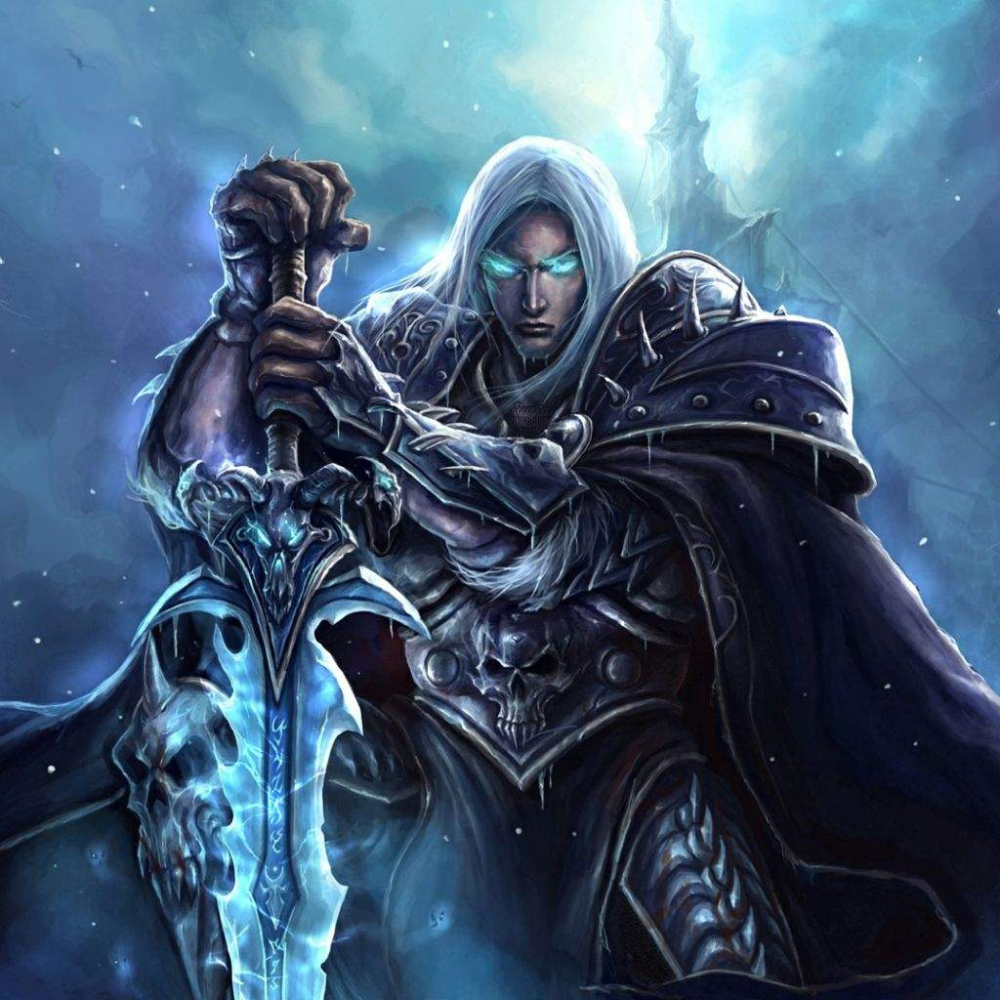
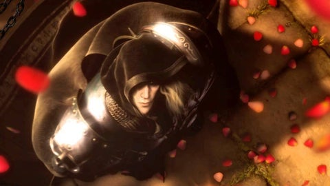
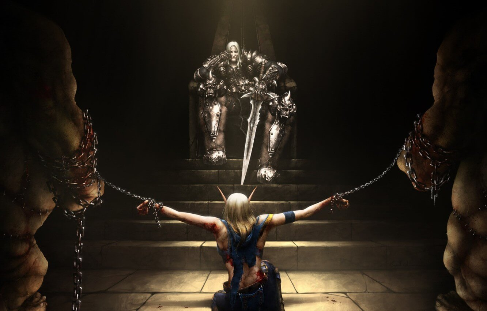
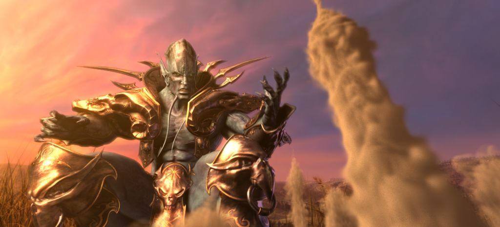
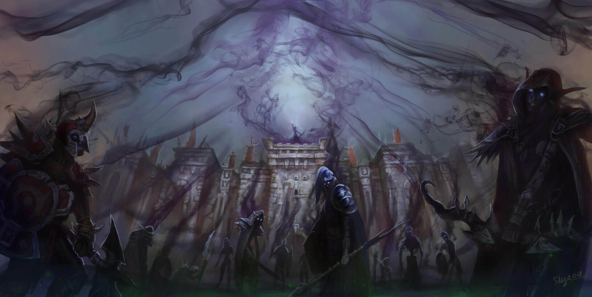
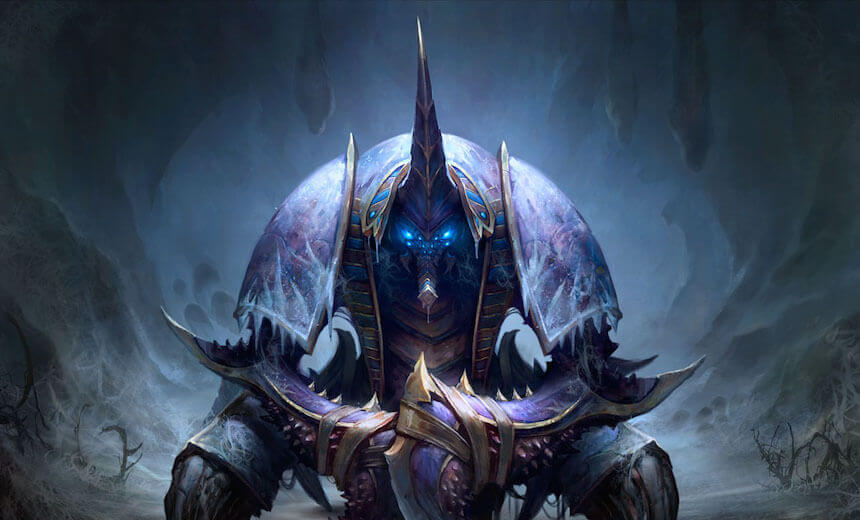
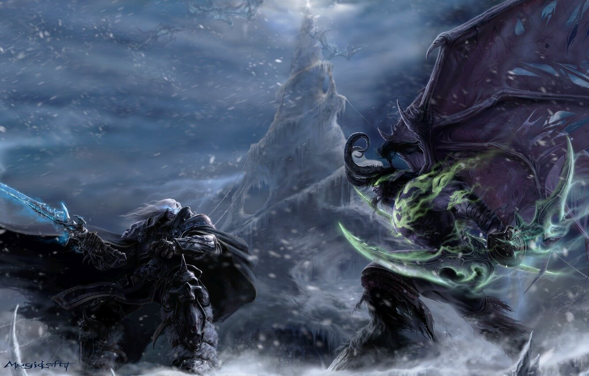

A bukás után
A Lich Király bajnoka
Az előző részt ott hagytuk el, hogy Arthas Northrenden (Északszirt) magához vette a rejtélyes rúnapengét, a Frostmourne-t. A penge azonban nemcsak azt jelentette, hogy szerzett magának egy hatalmas fegyvert, amivel legyőzhette Mal’Ganist és reményei szerint megmenthette népét, hanem azt is, hogy kész volt lelkét egy új mesternek adni. Ez a mester pedig nem volt más, mint a rejtélyes Lich King (Lidérckirály), aki a Frostmourne-on keresztül suttogott Arthas fülében. A hatalmas fegyverrel a kezében Arthas természetesen Mal’Ganist kereste fel legelőször, aki örömmel konstatálta, hogy Arthas felvette a fegyvert, pontosan úgy, ahogyan az előre el volt tervezve. A rémúr legnagyobb döbbenetére azonban Arthas elárulta, hogy maga a terv kiötlője, a Lich King is arra utasítja őt, hogy ölje meg a démont, amelynek természetesen örömmel eleget is tett. Mal’Ganis legyőzése után Arthas még mélyebbre hatolt Northrendre, és miközben a Lich King suttogását hallotta, józanságát teljes mértékben kezdte elveszíteni. A Lich King ugyanis új páncélzatot adott neki, és a saját bajnokává, egy death knighttá, vagyis halállovaggá változtatta őt. Még arra is rávette, hogy a saját embereit megölje, és közülük többeket, köztük Falricot és Thassariant, szintén halállovagként élesszen újra. Arthas megízlelte, hogy milyen mérhetetlen hatalom volt a kezében. A Frostmourne-on keresztül az egész Scourge-nek parancsolt, ráadásul az élőholtak feltétel nélkül követték őt és nem kérdőjelezték meg döntéseit.
Az Árulás

Hosszú hónapokkal később aztán seregével visszatért Lordaeronba. A
nép hősként ünnepelte, hiszen a hír, miszerint legyőzte a rejtélyes
élőholt járványt terjesztő Mal’Ganist, bejárta az egész vidéket.
Arthas és katonái lehajtott fejjel haladtak végig az ünneplő
tömegen, és egészen a fővárosig mentek, hogy ott Terenas Menethil
király is méltón ünnepelhesse őket. Csakhogy Arthas szemében az apja
már nem volt méltó arra, hogy király legyen. Azzal, hogy nem bízott
meg benne, hogy nem bízott abban, hogy ő Northrenden képes lesz
megoldást találni a problémára, az apja az ő szemében cserbenhagyta
őt is és vele együtt a népét is. Egyedül ő, Arthas volt képes
meghozni a legnagyobb áldozatot, hogy olyan fegyverre tehessen
szert, amellyel le tudta győzni a népét fenyegető démont. Ezek után
pedig neki kell Lordaeron királyának lenni, hogy segíthesse új
mesterét, a Lich Kinget. Így miután Arthas letérdelt apja elé,
felkelt, és a Frostmourne-t beleszúrta apja szívébe. A rettentő
árulás mind a mai napig ott kísért az egykori főváros tróntermében.
Arthas végleg hátat fordított korábbi életének, és végleg a Lich
King hűséges szolgájává vált. Apja halála után a Scourge-öt
rászabadította a fővárosra, és pontosan azt tette, amit az élőholt
járvány: megölte népének polgárait, hogy aztán tudattalan
élőholtakként szolgáljanak a Scourge rettentő seregében. Amíg serege
tönkretette szeretett városát, Arthas felkereste szeretett lovának,
Invincible-nek a nyughelyét, és újdonsült hatalmával feltámasztotta
a lovat, amelyről mindig is álmodott, amelynek az volt a küldetése,
hogy az ő lova legyen. A Lich Király megbízta egy feladattal, hogy
támassza fel Kel'Thuzad-ot, de egy ekkora varázslót nem lehet csak
úgy feltámasztani. Először is meg kellett szereznie a maradványait
egy kriptából, amit Gavinrad védett, aki a Szent "Light's Vengeance"
fegyvert adta Arthas-nak beiktatása napján. Az egykori hercegnek már
nem okozott gondot Gavinrad megölése, hiszen nem voltak már érzései.
Kel'Thuzad nem volt jó állapotban, ezért a misztikus Sunwell-hez
kellett vinnie, hogy feltámaszthassa, de előbb szüksége volt egy
különleges urnára, hogy a maradványai túléljék az utat. Az urnát a
Silver Hand lovagrend két Paladinja őrizte, akikkel gyorsan végzett,
majd Utherrel találta szembe magát, aki elárulta, hogy az urnában,
amit a kezében tart, az apjának, Terenas-nak a hamvai voltak. Arthas
vs. Uther Hatalmas összecsapás vette kezdetét. Az elején Uther
kerekedett felül, kiütötte Arthas-t és kezéből a Frostmourne-t.
Azonban mielőtt megölhette volna, a Lich King új erőt adott a
kardnak és visszarepült Arthas kezébe. Ezt követően már Arthas
uralta a harcot. Végül Uther vérben fürödve térdre rogyott és azt
mondta Arthas-nak, hogy reméli egy különleges hely várja őt a
pokolban. Arthas azt válaszolta, hogy ez sosem fog kiderülni, mert ő
örökké fog élni, majd megölte Uther-t. Megszerezte az urnát,
meggyalázta apja hamvait, melyek ezt követően körbe vették őt és
égették a szemeit. Végül Kel'thuzad maradványait az urnába helyezte
és elindult hosszú útjára Quel'Thalas-ba, ahol a Sunwell található.
Ennek a királyságnak buknia kell, és hamvaiból egy új rend
születik, mely alapjaiban változtatja meg a világot!
Quel'Thalas Bukása
Arthas úgy gondolta, Quel’Thalasban ugyanolyan könnyű dolga lesz, mint Lordaeronban, azonban a nemes elfek igyekeztek felkészülni támadására. Ez főleg vezetőjüknek, Sylvanas Windrunnernek (Szélfutó Sylvanas) volt köszönhető, aki bízott benne, hogy az elfek mágiája és sok évezredes tapasztalata elég lesz ennek a szörnyetegnek a megállításához és legyőzéséhez. Csakhogy a nemes elfek között volt olyan, aki nem bízott saját népében, helyette inkább a Scourge-dzsel állapodott meg: az örök életért cserébe elárulta a Quel’Thalast védő rúnakövek titkait. Sylvanas elborzadva nézte végig, ahogy Arthas könnyedén átjut a határon, és pillanatok alatt lemészárolja íjászait. Az íjász-tábornok hamar belátta, hogy esélytelenek lesznek a túlerővel szemben, és csak abban tudott reménykedni, hogy egy kis időt tud nyerni a király és a mágusok számára, akik addig is fel bírnak készülni a Scourge-dzsel való találkozásra. Így bátran, tudva, hogy ebből a csatából győztesen nem jöhet ki, szállt szembe Arthas-szal, és íjászaival együtt igyekezett annyi kellemetlenséget okozni a halállovagnak, amennyit csak tudott. Végül azonban ő is a Frostmourne áldozata lett, a nemes elf nő azonban nem félt a haláltól, boldogan fogadta annak sötét, megnyugtató ölelését. Arthas azonban úgy gondolta, hogy megleckézteti a nőt azért, amit tett. Így elvette Sylvanas Windrunnertől a halál nyugalmát és békéjét, helyette pedig sikoltó lidércként, banshee-ként élesztette újra, a saját és a Lich King akaratához kötötte őt, és így kellett saját népét megölnie. Végül a Scourge elpusztította Quel’Thalas fővárosát, Ezüstholdat (Silvermoon), majd Quel’Danas szigetén megölte a királyt, Anasterian Sunstridert (Napjáró Anasterian). Ezután a Napkút felhasználásával felélesztette Kel’Thuzadot, aki élőholt lich-ként (lidérc) éledt újjá, majd serege nagy részével együtt elhagyta a teljesen elpusztított Quel’Thalast.
Dalaran elpusztítása
Az újjáéledt Kel’Thuzaddal közösen Arthas újabb feladatot kapott: elő kell segíteniük, hogy a Lángoló Légió (Burning Legion) hadvezére, Archimonde Azeroth-ra léphessen. Ehhez először Dalaranba kellett behatolniuk, ahonnét megszerezték Medivh varázskönyvét, amely lehetővé tette, hogy a lichként is nagyhatalmú varázsló, Kel’Thuzad Azeroth-ra idézhesse Archimonde-ot. Amikor Archimonde megérkezett, rögtön kijelentette, hogy a Lich Kingre innentől kezdve már nincsen szüksége a Légiónak, a Scourge irányítását pedig a rémurak vezetője, a démon Tichondrius fogja átvenni. Ez Arthast felettébb meglepte, mivel így nem tudta, hogy rá és Kel’Thuzadra milyen sors vár, a varázsló azonban megnyugtatta, hogy mesterük, a Lich King pontosan erre számított, így ők most csendben vissza tudnak vonulni, és távolról szemlélhetik az eseményeket. Az egyetlen feladata Arthasnak a várakozáson kívül az volt, hogy Kalimdor területén felkeressen egy számára rejtélyes, nagyhatalmú démonvadászt, akit Illidan Stormrage-nek hívtak, és el kellett neki mondania, hogy hogyan szerezheti meg Gul’dan koponyáját, amellyel aztán le fogja tudni győzni Tichondriust. A Lich King terve a várakozásainak megfelelően működött. Azeroth egyesített serege legyőzte a Lángoló Légiót és megölték annak vezérét, Arhcimonde-ot, míg Illidan gondoskodott arról, hogy a démon Tichondrius is eltűnjön Azerothról. Így a Scourge ismét irányítás nélkül maradt, de a nagyerejű Lich King elméje hamar visszavette az uralmat a élőholtak felett. A visszaszerzett erő birtokában pedig pár hónappal később Arthas is elfoglalhatta trónját, mint Lordaeron királya.
Kalimdor invázíója
Amire azonban sem Arthas, sem a Lich King nem számított, az az, hogy befolyásuk a Scourge tagjai felett csökkenni fog. Azzal, hogy a Lich King létrehozta a Frostmourne-t, jeges börtönének egy részét megrepesztette, amely hosszú ideig nem okozott gondot, mostanra viszont jelentős mértékben lecsökkent az ereje és a befolyása, ráadásul ez az állapot csak tovább romlott. Az egyik első, aki észrevette ezt a változást, az Sylvanas Windrunner volt, a banshee, aki szíve legmélyéről gyűlölte Arthast és azt, amit tett vele. Hatalmas akaraterejének köszönhetően hamar észrevette, hogy Arthas befolyása enyhült, hogy képes már szabadon is cselekedni. De tudta, hogy ezt egy ideig még titokban kell tartania, így tovább játszotta szerepét, míg közben megegyezett három rémúrral, Varimathras-szal, Balnazzarral és Detheroc-kal, hogy segítenek neki elűzni Lordaeronból Arthast. A terv majdnem sikerült is és Sylvanas majdnem megölte Arthast, de a halállovag fejében a Lich King figyelmeztette őt a banshee árulására. Emellett a Lich King is érzékelte, hogy ereje fogytán van, és kétségbeesetten hívta Arthast Northrendre, hogy segítsen megvédeni őt és a Scourge-öt ellenségeiktől és a széteséstől. Arthas azonnal Northrendre indult, Lordaeront pedig Kel’Thuzad gondjaira bízta. A nekromanta azonban nem tudta megakadályozni azt, hogy Sylvanas a Lich King uralma alól felszabadult élőholtakkal együtt ne foglalja el az egykori fővárost, ahol egy új nemzetet alapított az Elhagyottak (Forsaken) néven.
Menekülés
Arthas három hét elteltével ért partot Northrenden, ahol egy nem várt ellenféllel találta szembe magát: a vérelfekkel (blood elves) és vezetőjükkel, Kael’thas Sunstriderrel (Napjáró Kael’thas), aki mindenáron bosszút akart állni rajta királysága és apja elpusztításáért. Arthas legnagyobb meglepetésére az újjákovácsolt Felo’melorn képes volt felvenni a versenyt a Frostmourne-nal, szerencséjére azonban ismét segítséget kapott mesterétől: Azjol-Nerub egykori királya, a kripta-úr Anub’Arak érkezett a csata helyszínére. Kael’thas ezután hamar távozott a csata helyszínéről, így Arthas folytathatta útját a jeges észak felé. Csakhogy hamar belátta, hogy a hatalmas hegyekkel és jeges szurdokokkal tűzdelt tájon csak nagyon lassan fog tudni áthaladni. Így pedig nem fog idejében odaérni mestere trónjához, aki feltárta előtte, hogy kivel is fut versenyt: nem mással, mint Illidannal, akinek Kil’jaeden parancsolta meg, hogy ölje meg a Lich Kinget. A tét hatalmas volt, így bármilyen segítség jól jött, ezért elfogadta Anub’Arak ajánlatát, hogy Azjol-Nerub kiterjedt földalatti királyságán haladjanak át, így nyerjenek időt Illidan előtt. Csakhogy az egykori Pókkirályság sem ellenfelek nélkül várta: egyrészt a Muradin „halála” után itt maradt törpök Baelgun Flamebeard vezetésével, valamint a megmaradt nerubianok sem látták őt itt jó szemmel. A felek csatározása pedig még egy ennél is veszélyesebb lényt ébresztett fel a mélyben: a halandók legendáiban élő Arctalanokat (Faceless Ones) és Elfeledettet (Forgotten one), akik a Northrenden fogva tartott Old God katonái voltak igazából. Miután egy földrengést is túlélve sikeresen kijutottak Azjol-Nerubból, a Lich King újra kapcsolatba lépett Arthas-szal és elmagyarázta neki, hogy azért veszít folyamatosan az erejéből, mert börtöne, a Fagyott Trón (Frozen Throne) megrepedt és azon keresztül szivárog ki az energiája. Megmaradt erejét azonban igyekezett Arthasnak adni, mert tudta, hogy minden erejére szüksége lesz a rá váró csatában.
Verseny a Fagyos trónért
Illidan és seregei rögtön Arthas útját állták, így a halállovagnak és seregének először Vashj nagáival és Kael’thas vérelfjeivel kellett megküzdenie. Ez alkalommal majdnem sikerült megölnie Kael’thast, akit végül Vashj mentett meg. A csata után azonban elérte a Fagyott Trónhoz vezető kaput, amely feltárult előtte, miután aktiválta a négy obeliszket. A kapu mögött pedig Illidan, a félig démonná változott lény várt rá. Kettejük csatája meglehetősen intenzív volt, ám egy óvatlan pillanatban Illidan szabadon hagyta magát, és Arthas rögtön lecsapott rá a Frostmourne-nal. Illidan összeesett a hóban, Arthas pedig megkezdte végső menetelését a Jégkorona Citadella (Icecrown Citadel) fagyott lépcsőin. Ahogy haladt felfelé a lépcsőn, megszólalt benne Muradin, Uther és Jaina és mind azt kérték tőle, hogy forduljon vissza, hogy még van lehetősége megváltozni és mindent jóvátenni. Szívének egy része könyörgött neki és kétségbe vonta a Lich King szavait. Az egykori paladin még megpróbálta visszafordítani a halállovagot, azonban már túl késő volt. Arthas Menethil, Lordaeron egykori hercege, a Scourge bajnoka rendíthetetlenül haladt felfelé a lépcsőn, hogy találkozhasson végre mesterével, aki megnyitotta előtte a lehetőségek tárházát, akinek segítségével démonokat győzött le. Előtte egy jégtömbbe zárva ott volt egy páncél, amely mintha egy hatalmas trónon ült volna. A Lich King sürgette Arthast, hogy tegye meg, amit meg kell tennie. A halállovag elővette a Frostmourne-t, amely erejét szintén a Lich Kingtől kapta, és lesújtott a fagyott börtönre. Jégszilánkok borították be a földet, és Arthas lábai előtt hevert a Helm of Domination, vagyis az Uralom Sisakra. Lassan előrehajolt, felvette, majd az elképzelhetetlen erejű tárgyat a fejére helyezte.